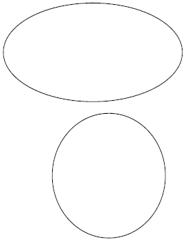
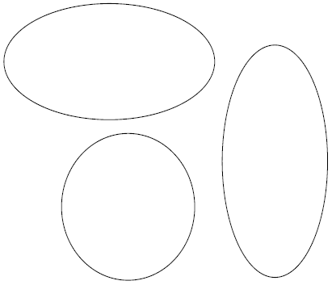
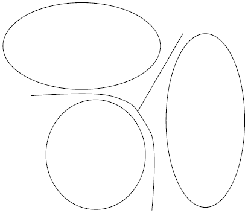
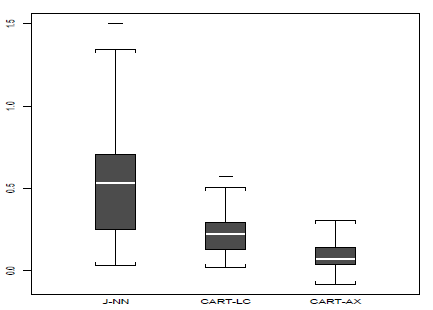

name:opening **From binary to multiclass classification**<br> Ronan Perry | [BME](https://www.bme.jhu.edu/)@[JHU](https://www.jhu.edu/) <center> <a href="https://neurodata.io"><img src="images/neurodata_purple.png" style="height:430px;"/></a> </center> <!-- <img src="images/funding/jhu_bme_blue.png" STYLE="HEIGHT:95px;"/> --> <!-- <img src="images/funding/KNDI.png" STYLE="HEIGHT:95px;"/> --> <!-- <font color="grey"></font> --> .foot[[rperry27@jhu.edu](mailto:rperry27@jhu.edu) | <http://neurodata.io/> | [@neuro_data](https://twitter.com/neuro_data)] --- ### Motivation - You've sat through Carey's DGL class and you love some good binary classification. -- - Your boss tells you to learn a binary classifier on this, easy. <center>  </center> -- - But then your boss asks about this. What now? <center>  </center> --- ## Outline - The classification framework - Estimating posteriors - The one-vs-one classifier - Examples --- class: middle ## .center[.k[The classification framework]] --- ### Terminology -- - $K$ unordered classes $1,...,K$ -- - Data $D_n = \\{x_i,y_i\\}_1^n$ -- - Observation $x_i \in \mathbb{R}^m$ -- - with label $y_i \in \\{1,...,K\\}$ -- - True (but unknown) posterior probabilities $$f_k(x) = P(y = k \mid x) \quad \forall k \in \\{1,...,K\\}$$ --- ### Learning a decision rule -- - Goal to minimize the probability of missclassification (risk under uniform loss) $$R = \mathbb{E}_x \mathbb{I}[\hat{y} \neq y] = P(\hat{y} \neq y)$$ -- - The optimal (Bayes) but unknown decision rule is $$y^* = \text{arg}\max\_{1 \leq k \leq K} f_k(x)$$ -- - Thus our plug in classifier is $$\hat{y} = \text{arg}\max\_{1 \leq k \leq K} \hat{f}\_k(x)$$ -- - But how to estimate the posteriors $\\{\hat{f}_k(x)\\}_1^K$? --- class: middle ## .center[.k[Estimating posteriors]] --- ### Density estimation -- - By Bayes theorem $$f_k(x) = P(y = k \mid x) = \frac{P(x \mid y = k)P(y = k)}{\sum_l P(x \mid y = l)P(y = l)}$$ -- - $P(x \mid y = k)$ can be estimated using density estimators (i.e. KDEs) -- - ex. Gaussian mixtures --- ### Regression -- - "one-vs-all" encoding $d_k = \mathbb{I}[y = k]$ -- - Posterior equivalent to $$f_k(x) = P(d_k = 1 \mid x) = \mathbb{E}(d_k \mid x)$$ -- - Equivalent to the least-squares solution $$f_k(x) = \text{arg} \min_f \mathbb{E}[(d_k - f)^2 \mid x]$$ -- - Motivates estimates $$\hat{f}\_k (x) = \text{arg} \min\_{f \in \mathcal{F}} \sum\_{i=1}^n [d\_k(y_i) - f(x\_i)]^2$$ -- - ex. decision tree, nearest neighbors, neural networks --- class: middle ## .center[.k[A new decision rule]] --- ### Reframing the decision rule -- - Consider the identity $$\text{arg} \max\_{1 \leq k \leq K} f\_k(x) = \text{arg} \max\_{1 \leq k \leq K} \sum_{l=1}^K \mathbb{I}[f\_k(x) > f\_l(x)]$$ -- <br /> - It follows that the Bayes optimal decision is $$y^* = \text{arg} \max\_{1 \leq k \leq K} \sum_{l=1}^K \mathbb{I}[f\_k(x) > f\_l(x)]$$ -- - Equivalently, can normalize each term $$y^* = \text{arg} \max\_{1 \leq k \leq K} \sum_{l=1}^K \mathbb{I}\bigg[\frac{f\_k(x)}{f\_k(x) + f\_l(x)} > \frac{f\_l(x)}{{f\_k(x) + f\_l(x)}}\bigg]$$ --- ### An alternative decision rule -- - The restated Bayes classifier $$y^* = \text{arg} \max\_{1 \leq k \leq K} \sum_{l=1}^K \mathbb{I}\bigg[\frac{f\_k(x)}{f\_k(x) + f\_l(x)} > \frac{f\_l(x)}{{f\_k(x) + f\_l(x)}}\bigg]$$ -- <br \> - Each term in the sum is the Bayes optimal two-class decision rule for $k$ vs. $l$, independent of the other $K-2$ classes. -- - The sum tracks how many time $k$ won over the other $K-1$ options. -- - The label with the most "wins" is selected. -- - The multiclass Bayes classifier is determined by the ${K \choose 2}$ pairwise Bayes classifiers. -- --- ### The one-vs-one classifier -- - The ${K \choose 2}$ one-vs-one functions -- $f\_k^{(kl)}(x) = \frac{f\_k(x)}{f\_k(x) + f\_l(x)} = \frac{P(x \mid y = k)P(y = k)}{P(x \mid y = k)P(y = k) + P(x \mid y = l)P(y = l)}$ -- - Estimated posterior $\hat{f}\_k^{(kl)}(x)$ of $y = k$ given $x$ for $y \in \\{k,l\\}$. -- - Thus our classifier is $$\hat{y} = \text{arg} \max\_{1 \leq k \leq K} \sum\_{l=1}^K \mathbb{I}[\hat{f}\_k^{(kl)} (x) > \hat{f}\_l^{(kl)}(x)]$$ --- ### Consequences -- - **Disadvantage**: Factor of $O(K)$ more classifiers -- - **Advantage**: potentially simpler decision boundaries <center>  </center> --- ### Bias and variance considerations -- - Can hopefully achieve lower bias on less complex spaces. -- - Variance hit due to reduced sample size. -- - Tailored model selection per each pair may help reduce variance. -- - Complex to asses effects on the aggregate multiclass classifier -- <br \><br \><br \> ...seems intriguing, but I want an example. --- class: middle ## .center[.k[Illuminating example]] --- ### Nearest Neighbors -- - **Traditional** $$\hat{f}\_k(x) = \frac{1}{J} \sum_{i=1}^n \mathbb{I}[||x - x_i|| \leq d_J(x)]\mathbb{I}(y_i = k) + t_k$$ -- - $J$ : number of nearest neighbors - $d_J(x)$ : the distance to the $J$th nearest neighbor of $x$ - $t_k$ : bias adjustment -- - Must learn $J$ - Must learn $\\{t_k\\}_1^K$ but are interdependent and so optimization is potentially exponential in $K$ (usually just set to 0). --- ### Nearest Neighbors -- - **Alternative** $$\hat{f}\_k^{(kl)}(x) = \frac{1}{J\_{kl}}\sum\_{y\_i \in \\{k,l\\}}\mathbb{I}[||x - x\_i|| \leq d\_{J\_{kl}}(x)]\mathbb{I}(y\_i = k) + t\_{kl}$$ -- - $J\_{kl}$ : number of nearest neighbors for that pair - $d\_{J_\{kl}}(x)$ : the distance to the $J$th nearest neighbor of $x$ - $t\_{kl}$ : bias adjustment -- - Must learn $J\_{kl}$. - Must learn $t\_{kl}$ but are independent. -- - $\{K \choose 2\}$ classifiers, each using on average $2/K$ fraction of the data for computational cost scaling linearly in $K$. --- ### Empirical Results -- - Toy examples show increased error using one-vs-all <center>  </center> --- ### Takeaways -- - Creating independence between parameters can yield computational benefits -- - Increased sample size can reduce variance and make bias reduction relatively more profitable. -- - One-vs-one classifiers need not be from the same space of classifiers. -- <br \><br \><br \> ...But wait, there's more --- ### In the defense of one-vs-all classification -- - Arguments for both methods (and others) in the literature. -- - Critiques focus on the choice of classifier and hyperparameter tuning. -- - Pick a good classifier and the choice of multi-class mode has minimal effect. -- - One-vs-all tends to be simpler from an implementation standpoint. --- class: middle ## .center[.k[Thank you!]] --- ### References - Friedman, J. H "Another Approach to Polychotomous Classification" (Oct. 1996). - Friedman, J.H "On Bias, Variance, 0/1—Loss, and the Curse-of-Dimensionality" (Mar. 1997). - Rifkin, R. and Klautau, A. "In Defense of One-vs-All Classification" (Dec. 2004).